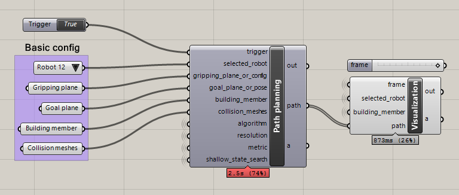

RFL Simulation examples¶
Contents
RFL simulation requires a running instance of v-rep with the RFL scene pre-loaded. There are two options to run v-rep:
Download it, install it and open the RFL scene file contained in this package (
fab\robots\rfl\vrep_remote_api\rfl_scene.ttt).Install as a service using Docker (only on Windows 10 and higher):
Make sure you have Docker installed.
Run the following commands on the command line:
docker pull gramaziokohler/vrep-rfl docker run --restart=always -p 19997:19997 -d gramaziokohler/vrep-rfl
Basic example¶
The most basic example is just connect to the simulator and verify the connection is working.
Copy and paste the following example and run it, you should see Connected: True
if everything is working properly:
from compas_fab.fab.robots.rfl import *
with Simulator() as simulator:
print ('Connected: %s' % simulator.is_connected())
Forward Kinematics¶
Moving robots¶
The RFL has 4 robots that can be referenced by an identifier: 11, 12, 21 and 22.
It’s important to make sure all four of them are positioned correctly and not colliding with each other at start, otherwise path planning will fail.
The position of a robot is specified as an instance of compas_fab.fab.robots.rfl.Configuration.
Here’s a simple example on how to position two of the robots using forward kinematics:
from compas_fab.fab.robots.rfl import *
config_robot_a = Configuration.from_joints_and_external_axes([190, 0, 0, 0, 90, 0],
[8260, -1000, -3690])
config_robot_b = Configuration.from_joints_and_external_axes([190, 0, 0, 0, 90, 0],
[8260, -8320, -3690])
with Simulator() as simulator:
robot_a = Robot(11, client=simulator)
robot_b = Robot(12, client=simulator)
simulator.set_robot_config(robot_a, config_robot_a)
simulator.set_robot_config(robot_b, config_robot_b)
Inverse Kinematics¶
Basic path planning example¶
Calculating a path plan requires several parameters to be configured in order to start the process. In its minimal expression, a path planning request must define a start configuration and a goal pose and rely on defaults for the rest. Here is an example of such a request:
from compas_fab.fab.robots import Pose
from compas_fab.fab.robots.rfl import *
start_config = Configuration.from_joints_and_external_axes([-143, 37, -112, 0, -15, -126],
[8260, -5320, -3690])
goal_pose = Pose.from_list([-1.0, 0.0, 0.0, 8110,
0.0, 0.0, -1.0, 7020,
0.0, -1.0, 0.0, 1810])
with Simulator() as simulator:
robot = Robot(12, client=simulator)
simulator.set_robot_config(robot, start_config)
path = simulator.find_path_plan(robot, goal_pose)
print('Found path of %d steps' % len(path))
Complete path planning example¶
The following example showcases a lot of the configuration options available when calculating a path plan:
import logging
from compas.datastructures.mesh import Mesh
from compas_fab import get_data
from compas_fab.fab.robots import Pose
from compas_fab.fab.robots.rfl import *
# Configure logging to DEBUG to see detailed timing of the path planning
logging.basicConfig(level=logging.DEBUG)
# Configure parameters for path planning
start_pose = Pose.from_list([0.0, 1.0, 0.0, 7453,
-1.0, 0.0, 0.0, 10919,
0.0, 0.0, 1.0, 609])
goal_pose = Pose.from_list([-1.0, 0.0, 0.0, 8110,
8.97e-13, 0.0, -1.0, 6920,
0.0, -1.0, 0.0, 1810])
algorithm = 'rrtconnect'
max_trials = 1
resolution = 0.02
building_member = Mesh.from_obj(get_data('timber_beam.obj'))
structure = [Mesh.from_obj(get_data('timber_structure.obj'))]
metric = [0.1] * 9
fast_search = True
with Simulator(debug=True) as simulator:
robot = Robot(12, client=simulator)
simulator.reset_all_robots()
simulator.pick_building_member(robot, building_member, start_pose)
path = simulator.find_path_plan(robot,
goal_pose,
metric_values=metric,
collision_meshes=structure,
algorithm=algorithm,
trials=max_trials,
resolution=resolution,
shallow_state_search=fast_search)
print('Found path of %d steps' % len(path))
Grasshopper integration¶
Besides the examples above that can be run standalone or inside CAD software, this package contains a ready-made integration for Grasshopper that allows configuration of most available parameters.
See this basic example and then
this complete path planning example for Grasshopper.